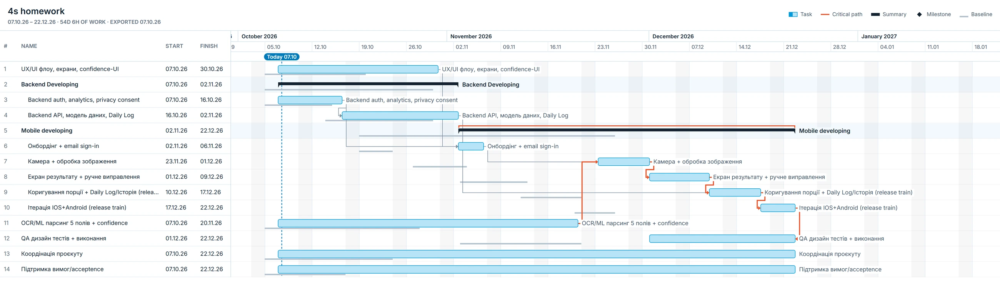
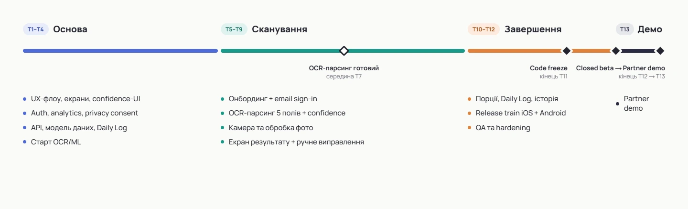

Коротко. Курс дав оцінки команди в годинах, ставки й доступність людей. Нам треба було перетворити їх на керований план: WBS, розклад із критичним шляхом, бюджет у межах NTE $50k, віхи, буфери та роадмапу до beta і демо.
- Склали розклад із 14 робіт, критичний шлях іде через OCR/ML-парсинг, екран результату й Daily Log.
- Розставили 7 віх і 3 буфери: code freeze наприкінці 11-го тижня, closed beta на 12-му, демо на 13-му.
- Роадмапа ділить проєкт на чотири етапи: основа, сканування, завершення і демо.
Завдання курсукурс
Наскрізний проєкт NutriScan
Що тренуємо: перетворити оцінку від команди на реалістичний план — WBS, PERT, розклад із залежностями, розподіл ресурсів за capacity, critical path, milestones, буфери та roadmap.
Головне: ви не визначаєте, скільки годин потрібно Mobile / Backend / OCR-ML.
Ви берете Estimation Snapshot від команди (Артефакт 01) і перетворюєте його на план.
Години — задані; ваша робота — план, залежності, capacity, бюджет, ризики.
Ситуація в проєкті
Привіт! Вимоги описані (ДЗ №3), scope підтверджено. Крок 4 — перетворити задум на керований базовий план і верхньорівневу дорожню карту NutriScan.
Матеріали (обов'язкові вхідні дані)
- Артефакт 01 — Estimation Snapshot (3-point від команди) — оцінки O / ML / P по work packages, ставки, non-labor, NTE.
- Артефакт 02 — Team Roles, Rates & Capacity — склад команди, ставки, доступність (capacity), таймзони.
- Артефакт 03 — Schedule Constraints & Approved MVP Scope v1 — підтверджений scope + графічні обмеження (beta до 12-го тижня).
- Canonical Project Snapshot — для звірки scope (source of truth).
Core — schedule baseline (обов'язково)
Baseline ≠ лише Gantt.
Мінімальний baseline-пакет: WBS → Gantt → resources/cost → milestones → buffers.
- WBS. Побудуйте WBS зі scope (Approved MVP Scope v1) і покажіть її перед Gantt — це окремий результат.
- Оцінка (PERT). Для кожного work package порахуйте PERT expected E = (O + 4·ML + P) / 6 з Estimation Snapshot; отримайте години та вартість (E × ставка ролі).
- Розклад (Gantt). Календарний план: задачі, залежності, призначені ресурси; визначте critical path.
- Resources / cost. Розподіліть завантаження за capacity (без перевантаження понад доступність). Порахуйте labor cost + non-labor = base; contingency = NTE − base.
- Milestones + buffers. Віхи проєкту та буфери під ризики/невизначеність.
Roadmap (окремо від Gantt)
Зробіть верхньорівневу roadmap із етапами/milestones і логікою руху до beta (12-й тиждень) / demo, + анотація ≤ 1 стор. з аргументацією строків і витрат на певні milestones.
- Критерій: Roadmap не дублює Gantt. Gantt = задачі, залежності, ресурси, календар. Roadmap = верхньорівневі етапи/milestones + логіка руху до beta/demo (без задач і залежностей).
Що здати
- WBS (окремо, перед розкладом).
- Таблиця оцінки (PERT E, години і вартість по ролях/пакетах).
- Gantt із залежностями, ресурсами й позначеним critical path.
- Розрахунок бюджету: base + contingency у межах NTE $50k.
- Milestones + буфери.
- Roadmap + анотація ≤ 1 стор.
Обмеження та правила
- Плануйте на основі наданих оцінок (Estimation Snapshot) — не вигадуйте години.
- Канон бюджету: NTE / BAC = $50k. Клієнтський початковий орієнтир ~$45k — це контекст, а не план. Base і contingency порахуйте самі (contingency = NTE − base).
- Не перевантажуйте ресурси понад capacity (враховуйте частку доступності й таймзони).
- Незадані числа позначайте як assumption / open question.
Діаграма Ганта


Віхи та буфери
Сім віх і три буфери. Канонічні дати задав курс, проміжні віхи й буфери ми розставили самі в межах цих обмежень.
| Коли | День | Назва | Тип | Критерій / що означає | Підстава | Статус у плані |
|---|---|---|---|---|---|---|
| W4 | D20 | Design Approved | Milestone | UX/UI флоу, екрани та confidence-UI погоджені й достатні для подальшої реалізації. | WBS 1.2.1; проміжна віха розставлена PM у межах schedule constraints. | Робочий план |
| W7–W8 | D31–D40 | Integration / Handoff Buffer | Feeding Buffer | Резерв на хендофи між UX / Mobile / Backend / OCR/ML / QA. | Розподілена команда PST/UTC/GMT; залежності на critical path. | Робочий план |
| W9 | D45 | MVP Core Ready | Milestone | Наскрізний core flow інтегрований: sign-in → camera → OCR → result/correction → Daily Log. | Після 1.3.5 Integration iOS+Android. | Робочий план |
| W10 | D46–D50 | QA rework / stabilization buffer | Feeding Buffer | Резерв на доопрацювання за результатами QA та повторне тестування. | У Gantt прямо зазначено W10 як buffer / rework за результатами QA. | Зафіксовано в Gantt |
| W11 | D54 | Release Candidate Ready | Milestone | Основний scope завершений; до freeze залишаються тільки hardening / bug fixes. | Підготовча віха перед Code Freeze. | Робочий план |
| Кінець W11 | D55 | Code Freeze | Milestone | Нові feature-зміни зупинено; тільки bug fixes і QA hardening. | Артефакт 03 / Gantt. | Канон |
| W12 | D56–D59 | QA hardening + Project Buffer | Project Buffer | Фінальна стабілізація і спільний запас часу перед Closed Beta. | Захист кінцевої дати критичного ланцюга. | Робочий план |
| Кінець W12 | D60 | Closed Beta Build | Milestone | Стабільна beta build готова до внутрішнього тестування. | Артефакт 03 / Gantt. | Канон |
| W13 | D65 | Partner Demo | Milestone | Демонстрація MVP партнеру. | Артефакт 03 / Gantt. | Канон |
| W13* | D65* | iOS + Android Release Train | Milestone | Обидві платформи випускаються одним release train. | WBS 1.3.5; точний тиждень release не заданий. | Припущення |
Типи буферів і статусів
- Feeding Buffer - ставиться там, де некритичний ланцюг входить у критичний шлях. Захищає critical path від затримок «збоку».
- Project Buffer - спільний резерв часу в кінці критичного ланцюга перед дедлайном.
- Resource Buffer - завчасний сигнал або резерв доступності ключового ресурсу, щоб він був вільний у момент, коли починається критична задача.
- Канон - задано в умові.
- Робочий план - ми самі спланували в межах канону
Роадмапа


* Release Train у W13 — робоче припущення для roadmap: у вихідному Gantt зафіксовано лише одночасний iOS+Android release train, без конкретного тижня.